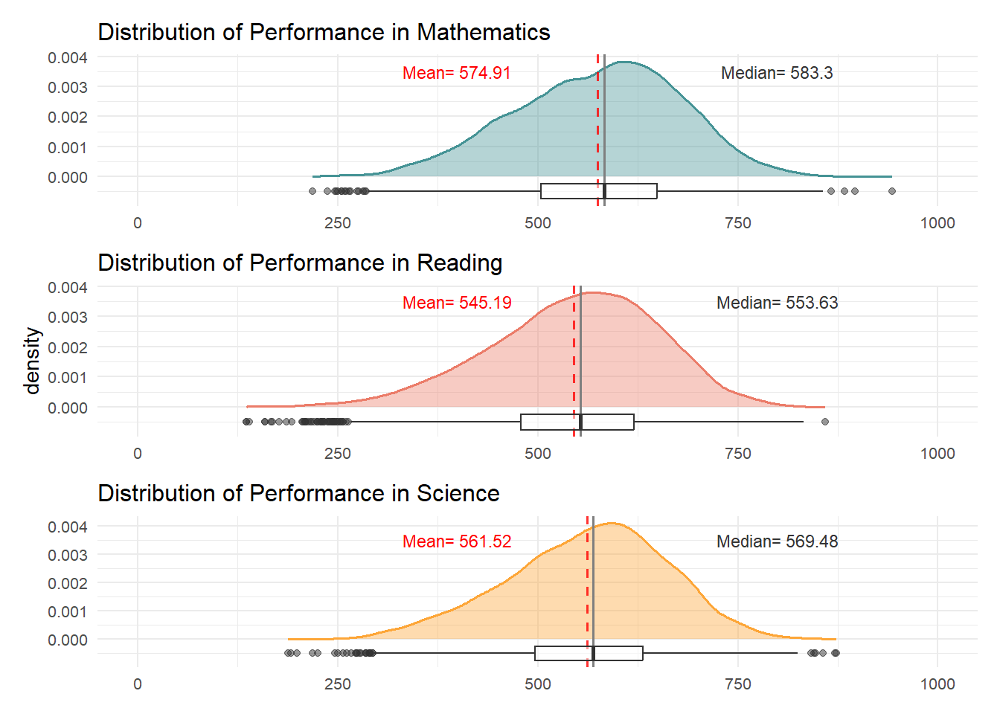
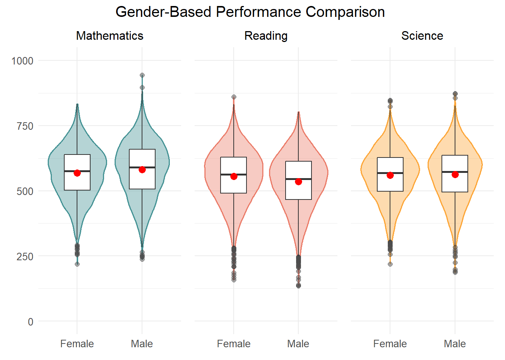
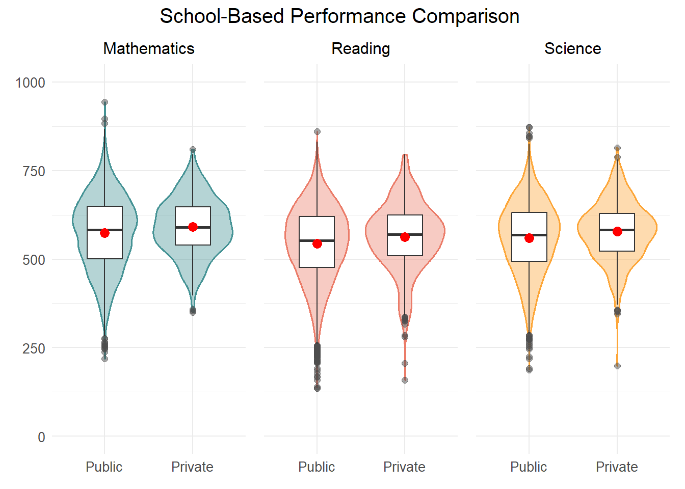
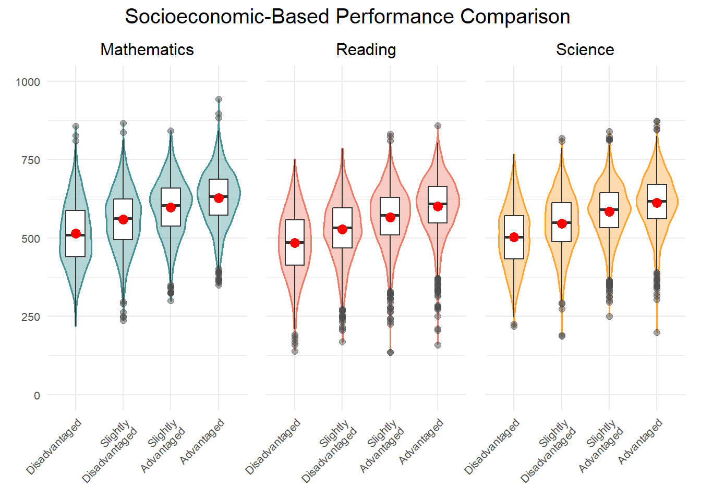
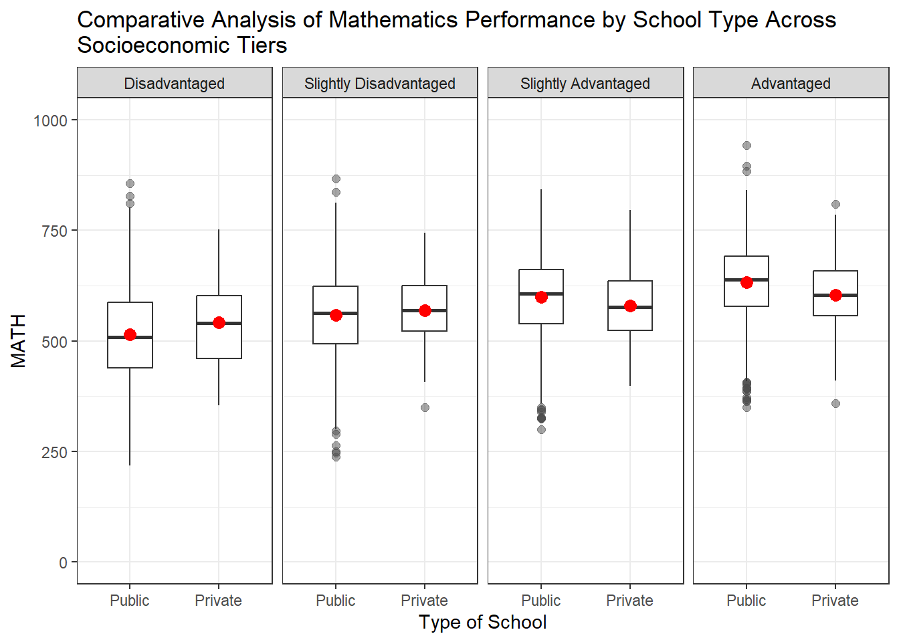

pacman::p_load(tidyverse, haven, patchwork, ggdist, ggrain, ggridges)Take-home Exercise 1
Creating data visualisation beyond default
1 Overview
OECD education director Andreas Schleicher shared in a BBC article that “Singapore managed to achieve excellence without wide differences between children from wealthy and disadvantaged families.” (2016) However, there are public concern about the inequality, particularly in the context between elite schools and neighborhood school, between families with higher socioeconomic status and those with relatively lower socioeconomic status and immigration and non-immigration families.
1.1 Objectives
This analysis using the 2022 PISA data aims to explore these aspects in Singapore’s context. The objective of this study is to adopt appropriate Exploratory Data Analysis (EDA) methods and ggplot2 functions to reveal:
- the distribution of Singapore students’ performance in mathematics, reading, and science, and
- the relationship between these performances with schools, gender and socioeconomic status of the students.
2 Data preparation
2.1 Loading R packages
First, following code chunk with pacman::p_load() function is used to load required R packages into our working environment:
2.2 Importing PISA data
The code chunk below uses read_sas() of haven to import PISA data into working environment
stu_qqq <- read_sas("data/cy08msp_stu_qqq.sas7bdat")The data table consists of 613,744 observations and 1,279 variables.
2.3 Data extracting
Referring to PISA code book, it is noted that the data table include results from 81 participating countries. As this study focus on Singapore’s context, relevant observations is filtered using filter() on the country code variable “CNT”.
stu_qqq_SG <- stu_qqq %>%
filter(CNT == "SGP")The filtered data is then saved in R Data Format and re-imported into the working environment.
write_rds(stu_qqq_SG, "data/stu_qqq_SG.rds")stu_qqq_SG <- read_rds("data/stu_qqq_SG.rds")
stu_qqq_SG# A tibble: 6,606 × 1,279
CNT CNTRYID CNTSCHID CNTSTUID CYC NatCen STRATUM SUBNATIO REGION OECD
<chr> <dbl> <dbl> <dbl> <chr> <chr> <chr> <chr> <dbl> <dbl>
1 SGP 702 70200052 70200001 08MS 070200 SGP01 7020000 70200 0
2 SGP 702 70200134 70200002 08MS 070200 SGP01 7020000 70200 0
3 SGP 702 70200112 70200003 08MS 070200 SGP01 7020000 70200 0
4 SGP 702 70200004 70200004 08MS 070200 SGP01 7020000 70200 0
5 SGP 702 70200152 70200005 08MS 070200 SGP01 7020000 70200 0
6 SGP 702 70200043 70200006 08MS 070200 SGP01 7020000 70200 0
7 SGP 702 70200049 70200007 08MS 070200 SGP01 7020000 70200 0
8 SGP 702 70200107 70200008 08MS 070200 SGP01 7020000 70200 0
9 SGP 702 70200012 70200009 08MS 070200 SGP01 7020000 70200 0
10 SGP 702 70200061 70200010 08MS 070200 SGP01 7020000 70200 0
# ℹ 6,596 more rows
# ℹ 1,269 more variables: ADMINMODE <dbl>, LANGTEST_QQQ <dbl>,
# LANGTEST_COG <dbl>, LANGTEST_PAQ <dbl>, Option_CT <dbl>, Option_FL <dbl>,
# Option_ICTQ <dbl>, Option_WBQ <dbl>, Option_PQ <dbl>, Option_TQ <dbl>,
# Option_UH <dbl>, BOOKID <dbl>, ST001D01T <dbl>, ST003D02T <dbl>,
# ST003D03T <dbl>, ST004D01T <dbl>, ST250Q01JA <dbl>, ST250Q02JA <dbl>,
# ST250Q03JA <dbl>, ST250Q04JA <dbl>, ST250Q05JA <dbl>, ST250D06JA <chr>, …After completing the previous steps, we are left with a substantial data table consisting 1,279 variables. At this point, it is essential to narrow down these variables to focus on the most relevant ones. By examining the code book, the following variables were chosen to align with the objective of this study:
| Variable name | Label | Description |
|---|---|---|
| CNTSTUID | Intl. Student ID | Student ID of participating students |
| STRATUM | Stratum ID 5-character (cnt + original stratum ID) |
Type of School SGP01 : Public / Secondary SGP03 : Private / Secondary |
| ST004D01T | Student (Standardized) Gender | Gender 1 : Female 2 : Male |
| ESCS | Index of economic, social and cultural status | Measurement of student’s socio-economic status |
| PV1MATH | Plausible Value 1 in Mathematics | Student’s performance for Mathematics |
| PV1READ | Plausible Value 1 in Reading | Student’s performance for Reading |
| PV1SCIE | Plausible Value 1 in Science | Student’s performance for Science |
We use select() and rename()from dplyr to select the column and rename the variable for clarity.
stu_qqq_SG_selected <- stu_qqq_SG %>%
select('CNTSTUID',
'STRATUM',
'ST004D01T',
'ESCS',
'PV1MATH',
'PV1READ',
'PV1SCIE') %>%
rename(StudentID = CNTSTUID,
TypeofSchool = STRATUM,
Gender = ST004D01T,
MATH = PV1MATH,
READ = PV1READ,
SCIENCE = PV1SCIE)2.4 Summary Statistics of data table
stu_qqq_SG_selected# A tibble: 6,606 × 7
StudentID TypeofSchool Gender ESCS MATH READ SCIENCE
<dbl> <chr> <dbl> <dbl> <dbl> <dbl> <dbl>
1 70200001 SGP01 1 0.184 639. 676. 711.
2 70200002 SGP01 2 0.826 697. 626. 671.
3 70200003 SGP01 2 -1.04 694. 620. 666.
4 70200004 SGP01 2 -0.961 427. 381. 340.
5 70200005 SGP01 1 0.0856 436. 448. 456.
6 70200006 SGP01 1 0.127 570. 469. 475.
7 70200007 SGP01 2 -0.0154 772. 745. 694.
8 70200008 SGP01 2 1.16 568. 527. 583.
9 70200009 SGP01 1 1.47 740. 722. 725.
10 70200010 SGP01 2 0.520 586. 540. 590.
# ℹ 6,596 more rowssummary(stu_qqq_SG_selected) StudentID TypeofSchool Gender ESCS
Min. :70200001 Length:6606 Min. :1.000 Min. :-3.5488
1st Qu.:70201836 Class :character 1st Qu.:1.000 1st Qu.:-0.2327
Median :70203674 Mode :character Median :2.000 Median : 0.4817
Mean :70203673 Mean :1.508 Mean : 0.2904
3rd Qu.:70205513 3rd Qu.:2.000 3rd Qu.: 0.9036
Max. :70207345 Max. :2.000 Max. : 3.2780
NA's :47
MATH READ SCIENCE
Min. :218.6 Min. :135.9 Min. :187.5
1st Qu.:503.1 1st Qu.:476.9 1st Qu.:495.7
Median :582.5 Median :552.9 Median :568.7
Mean :574.2 Mean :544.4 Mean :560.8
3rd Qu.:648.2 3rd Qu.:619.6 3rd Qu.:631.1
Max. :943.0 Max. :859.5 Max. :873.3
Check for duplicated value
stu_qqq_SG_selected[duplicated(stu_qqq_SG_selected),]# A tibble: 0 × 7
# ℹ 7 variables: StudentID <dbl>, TypeofSchool <chr>, Gender <dbl>, ESCS <dbl>,
# MATH <dbl>, READ <dbl>, SCIENCE <dbl>Checking for missing data
stu_qqq_SG_selected %>% summarise_all(funs(sum(is.na(.))))# A tibble: 1 × 7
StudentID TypeofSchool Gender ESCS MATH READ SCIENCE
<int> <int> <int> <int> <int> <int> <int>
1 0 0 0 47 0 0 0The output shows 47 missing values for ESCS, the observations were dropped using drop_na():
stu_qqq_SG_selected2 <- stu_qqq_SG_selected %>% drop_na()⚠️ Data quality issues
- Inappropriate column types
Following columns were converted to appropriate type:- “StudentID” : convert from
<dbl>to<chr> - “TypeofSchool” : convert from
<chr>to<fct> - “Gender” : convert from
<dbl>to<fct>
- “StudentID” : convert from
- Non-Descriptive Values
Values from “Gender” and “TypeofSchool” were recoded to descriptive values usingfct_recodeto improve clarity. - Disaggregated ESCS Index
Binning of the ESCS index into categories of most disadvantaged to the most advantaged groups can facilitate more granular analysis and provide meaningful insights. 4 groups of students of equal size were created usingcut_number(), each group comprises 25% of the population of 15-year-old students in Singapore.
Code
stu_qqq_SG_converted <- stu_qqq_SG_selected2 %>%
# change column type
mutate(StudentID = as.character(StudentID),
TypeofSchool = as.factor(TypeofSchool),
Gender = as.factor(Gender)) %>%
# recode non-descriptive values
mutate(Gender = fct_recode (Gender,
"Female" = "1",
"Male" = "2"),
TypeofSchool = fct_recode (TypeofSchool,
"Public" = "SGP01",
"Private" = "SGP03"),
# binning of disaggregated data
binned_ESCS = cut_number(stu_qqq_SG_selected2$ESCS,
n = 4,
labels = c("Disadvantaged",
"Slightly Disadvantaged",
"Slightly Advantaged",
"Advantaged")))Following final data table is used for Exploratory data analysis:
stu_qqq_SG_converted# A tibble: 6,559 × 8
StudentID TypeofSchool Gender ESCS MATH READ SCIENCE binned_ESCS
<chr> <fct> <fct> <dbl> <dbl> <dbl> <dbl> <fct>
1 70200001 Public Female 0.184 639. 676. 711. Slightly Disadvant…
2 70200002 Public Male 0.826 697. 626. 671. Slightly Advantaged
3 70200003 Public Male -1.04 694. 620. 666. Disadvantaged
4 70200004 Public Male -0.961 427. 381. 340. Disadvantaged
5 70200005 Public Female 0.0856 436. 448. 456. Slightly Disadvant…
6 70200006 Public Female 0.127 570. 469. 475. Slightly Disadvant…
7 70200007 Public Male -0.0154 772. 745. 694. Slightly Disadvant…
8 70200008 Public Male 1.16 568. 527. 583. Advantaged
9 70200009 Public Female 1.47 740. 722. 725. Advantaged
10 70200010 Public Male 0.520 586. 540. 590. Slightly Advantaged
# ℹ 6,549 more rows3 Exploratory Data Analysis
3.1 Distribution of Performance in Mathematics, Reading and Science
Code
# Distribution of Performance in Mathematics
P1 <- ggplot(data = stu_qqq_SG_converted,
aes(x = MATH)) +
geom_density(color = "#459395", size = 0.6, fill= "#459395", alpha = 0.4) +
coord_cartesian(xlim = c(0,1000)) +
geom_vline(aes(xintercept = mean(MATH)),
color = "red", alpha = 0.8, linewidth = 0.7, linetype = "dashed") +
annotate("text", x = 400, y = 0.0035,
label = paste("Mean=",
round(mean(stu_qqq_SG_converted$MATH, na.rm=T), 2)),
color = "red", size = 3) +
geom_vline(aes(xintercept = median(MATH)),
color= "grey50", linewidth = 0.7, linetype = "solid") +
annotate("text", x = 800, y = 0.0035,
label = paste("Median=",
round(median(stu_qqq_SG_converted$MATH, na.rm=T), 2)),
color = "grey20", size = 3) +
geom_boxplot(width = 0.0005, fill = "white", alpha = 0.5,
position = position_nudge(y = -0.0005)) +
theme_minimal()+
labs(title="Distribution of Performance in Mathematics") +
theme(axis.title.x = element_blank(),
axis.title.y = element_blank(),
plot.title=element_text(size= 12),
axis.text = element_text(size= 8))
# Distribution of Performance in Reading
P2 <- ggplot(data = stu_qqq_SG_converted,
aes(x = READ)) +
geom_density(color = "#EB7C69", size = 0.6, fill= "#EB7C69", alpha = 0.4) +
coord_cartesian(xlim = c(0,1000)) +
geom_vline(aes(xintercept = mean(READ)),
color = "red", alpha = 0.8, linewidth = 0.7, linetype = "dashed") +
annotate("text", x = 400, y = 0.0035,
label = paste("Mean=",
round(mean(stu_qqq_SG_converted$READ, na.rm=T), 2)),
color = "red", size = 3) +
geom_vline(aes(xintercept = median(READ)),
color= "grey50", linewidth = 0.7, linetype = "solid") +
annotate("text", x = 800, y = 0.0035,
label = paste("Median=",
round(median(stu_qqq_SG_converted$READ, na.rm=T), 2)),
color = "grey20", size = 3) +
geom_boxplot(width = 0.0005, fill = "white", alpha = 0.5,
position = position_nudge(y = -0.0005)) +
theme_minimal()+
labs(title="Distribution of Performance in Reading",
y = "density") +
theme(axis.title.x = element_blank(),
plot.title=element_text(size= 12),
axis.text = element_text(size= 8))
# Distribution of Performance in Science
P3 <- ggplot(data = stu_qqq_SG_converted,
aes(x = SCIENCE)) +
geom_density(color = "#FDA638", size = 0.6, fill= "#FDA638", alpha = 0.4) +
coord_cartesian(xlim = c(0,1000)) +
geom_vline(aes(xintercept = mean(SCIENCE)),
color = "red", alpha = 0.8, linewidth = 0.7, linetype = "dashed") +
annotate("text", x = 400, y = 0.0035,
label = paste("Mean=",
round(mean(stu_qqq_SG_converted$SCIENCE, na.rm=T), 2)),
color = "red", size = 3) +
geom_vline(aes(xintercept = median(SCIENCE)),
color= "grey50", linewidth = 0.7, linetype = "solid") +
annotate("text", x = 800, y = 0.0035,
label = paste("Median=",
round(median(stu_qqq_SG_converted$SCIENCE, na.rm=T), 2)),
color = "grey20", size = 3) +
geom_boxplot(width = 0.0005, fill = "white", alpha = 0.5,
position = position_nudge(y = -0.0005)) +
theme_minimal()+
labs(title="Distribution of Performance in Science") +
theme(axis.title.x = element_blank(),
axis.title.y = element_blank(),
plot.title=element_text(size= 12),
axis.text = element_text(size= 8))
P1 / P2 / P3
The density plot for performance in Mathematics, reading and science shows a predominantly normal distribution with a slight left skew, as indicated by mean scores being lower than medians in all subjects. The box plot below reveals tight interquartile range in all subjects, which indicates that 50% of the students performed within a relatively narrow range, emphasizing a strong central tendency.
Across three subjects, mathematics showed the highest performance on average, followed by Science and Reading. A similar pattern is observed in the median scores. In mathematics, the right tail extends farther than the other two subjects, indicating the occurrence of maximum PV value in this subject. In reading, the box plot shows a relatively higher number of outliers at the lower range, which indicates this subject has the weakest performance among all subjects.
These distributions could be further explored in the context of school, gender, and socioeconomic background to determine if these factors influence the performance distribution.
3.2 Relationship between Performance in Mathematics, Reading and Science with Gender
Code
P4 <- ggplot(data= stu_qqq_SG_converted,
aes(x= Gender, y= MATH)) +
geom_violin(color = "#459395", size = 0.6, fill= "#459395", alpha = 0.4) +
geom_boxplot(width= 0.4, outlier.colour = "grey30", outlier.size = 2,
outlier.alpha = 0.5, outlier.shape = 19) +
stat_summary(geom = "point",
fun.y="mean",
colour ="red",
size=3) + coord_cartesian(ylim = c(0,1000)) +
scale_color_manual(values=c("#999999", "#E69F00")) +
theme_minimal() +
labs(title="Mathematics") +
theme(axis.title.x = element_blank(),
axis.title.y = element_blank(),
plot.title=element_text(size= 12, hjust= 0.5),
axis.text = element_text(size= 10))
P5 <- ggplot(data= stu_qqq_SG_converted,
aes(x= Gender, y= READ)) +
geom_violin(color = "#EB7C69", size = 0.6, fill= "#EB7C69", alpha = 0.4) +
geom_boxplot(width= 0.4, outlier.colour = "grey30", outlier.size = 2,
outlier.alpha = 0.5, outlier.shape = 19) +
stat_summary(geom = "point",
fun.y="mean",
colour ="red",
size=3) + coord_cartesian(ylim = c(0,1000)) +
theme_minimal() +
labs(title="Reading") +
theme(axis.title.x = element_blank(),
axis.title.y = element_blank(),
axis.text.y = element_blank(),
plot.title=element_text(size= 12, hjust= 0.5),
axis.text = element_text(size= 10))
P6 <- ggplot(data= stu_qqq_SG_converted,
aes(x= Gender, y= SCIENCE)) +
geom_violin(color = "#FDA638", size = 0.6, fill= "#FDA638", alpha = 0.4) +
geom_boxplot(width= 0.4, outlier.colour = "grey30", outlier.size = 2,
outlier.alpha = 0.5, outlier.shape = 19) +
stat_summary(geom = "point",
fun.y="mean",
colour ="red",
size=3) + coord_cartesian(ylim = c(0,1000)) +
theme_minimal() +
labs(title="Science") +
theme(axis.title.x = element_blank(),
axis.text.y = element_blank(),
axis.title.y = element_blank(),
plot.title=element_text(size= 12, hjust= 0.5),
axis.text = element_text(size= 10))
(P4 + P5 + P6) +
plot_annotation(title= "Gender-Based Performance Comparison ",
theme = theme(plot.title=element_text(size= 15, hjust= 0.5)))
This EDA visualization utilizes violin plots with integrated box plots to compare academic performance by gender across Mathematics, Reading, and Science among Singaporean students. The violin plots suggest a roughly normal distribution for scores in all subjects, with slight variations. The ‘body’ of each violin is bulged in the middle, indicating a concentration of scores around the median. From the box plot, it is observed that in all subjects, the median and mean are close to each other, with the mean slightly lower, suggesting a modest left skew in the data.
In mathematics, the plots indicate males performed slightly better than females, with a slightly higher median and mean. The outliers at the higher end of the scores suggest that some students achieve excellent performance. In Reading, females markedly outperform males, evidenced by higher median and mean values, and a wider distribution at the higher end of scores. Science shows a near-identical performance between genders, with both median and mean scores closely aligned, suggesting minimal gender variation in this subject.
In general, performance across different subjects for male and females exhibits a slight variation.
3.3 Relationship between Performance in Mathematics, Reading and Science with School Type
Code
P7 <- ggplot(data= stu_qqq_SG_converted,
aes(x= TypeofSchool, y= MATH)) +
geom_violin(color = "#459395", size = 0.6, fill= "#459395", alpha = 0.4) +
geom_boxplot(width= 0.4, outlier.colour = "grey30", outlier.size = 2,
outlier.alpha = 0.5, outlier.shape = 19) +
stat_summary(geom = "point",
fun.y="mean",
colour ="red",
size=3) + coord_cartesian(ylim = c(0,1000)) +
scale_color_manual(values=c("#999999", "#E69F00")) +
theme_minimal() +
labs(title="Mathematics") +
theme(axis.title.x = element_blank(),
axis.title.y = element_blank(),
plot.title=element_text(size= 12, hjust= 0.5),
axis.text = element_text(size= 10))
P8 <- ggplot(data= stu_qqq_SG_converted,
aes(x= TypeofSchool, y= READ)) +
geom_violin(color = "#EB7C69", size = 0.6, fill= "#EB7C69", alpha = 0.4) +
geom_boxplot(width= 0.4, outlier.colour = "grey30", outlier.size = 2,
outlier.alpha = 0.5, outlier.shape = 19) +
stat_summary(geom = "point",
fun.y="mean",
colour ="red",
size=3) + coord_cartesian(ylim = c(0,1000)) +
theme_minimal() +
labs(title="Reading") +
theme(axis.title.x = element_blank(),
axis.title.y = element_blank(),
axis.text.y = element_blank(),
plot.title=element_text(size= 12, hjust= 0.5),
axis.text = element_text(size= 10))
P9 <- ggplot(data= stu_qqq_SG_converted,
aes(x= TypeofSchool, y= SCIENCE)) +
geom_violin(color = "#FDA638", size = 0.6, fill= "#FDA638", alpha = 0.4) +
geom_boxplot(width= 0.4, outlier.colour = "grey30", outlier.size = 2,
outlier.alpha = 0.5, outlier.shape = 19) +
stat_summary(geom = "point",
fun.y="mean",
colour ="red",
size=3) + coord_cartesian(ylim = c(0,1000)) +
theme_minimal() +
labs(title="Science") +
theme(axis.title.x = element_blank(),
axis.text.y = element_blank(),
axis.title.y = element_blank(),
plot.title=element_text(size= 12, hjust= 0.5),
axis.text = element_text(size= 10))
(P7 + P8 + P9) +
plot_annotation(title= "School-Based Performance Comparison ",
theme = theme(plot.title=element_text(size= 15, hjust= 0.5)))
The EDA visualization comparing student performance across Mathematics, Reading, and Science reveals distinct patterns. Public schools exhibit a broader distribution of scores, suggesting a diverse range of performance levels. Conversely, private schools show a narrower spread, as evidenced by the shorter violin plots, yet with a wider width at the median, indicating a dense clustering of scores around the central tendency. This is further supported by the narrower interquartile range observed in private schools, pointing to a more consistent performance among their students.
Additionally, the mean and median scores in private schools are marginally higher than those in public schools, suggesting a slight academic advantage. Moreover, public schools display a greater number of outliers, especially in the lower score range, highlighting a segment of students with performance significantly below the average.
These insights suggest that while student performance in private schools is more consistent with a tendency towards higher achievement, public schools demonstrate a wider variability in student outcomes.
3.4 Relationship between Performance in Mathematics, Reading and Science with Socioeconomic Status
Code
P10 <- ggplot(data= stu_qqq_SG_converted,
aes(x= binned_ESCS, y= MATH)) +
geom_violin(color = "#459395", size = 0.6, fill= "#459395", alpha = 0.4) +
geom_boxplot(width= 0.4, outlier.colour = "grey30", outlier.size = 2,
outlier.alpha = 0.5, outlier.shape = 19) +
stat_summary(geom = "point",
fun.y="mean",
colour ="red",
size=3) + coord_cartesian(ylim = c(0,1000)) +
scale_color_manual(values=c("#999999", "#E69F00")) +
theme_minimal() +
labs(title="Mathematics") +
theme(axis.title.x = element_blank(),
axis.title.y = element_blank(),
plot.title=element_text(size= 12, hjust= 0.5),
axis.text = element_text(size= 8),
axis.text.x = element_text(angle = 45, hjust = 1)) +
scale_x_discrete(breaks = unique(stu_qqq_SG_converted$binned_ESCS),
labels = str_wrap(unique(stu_qqq_SG_converted$binned_ESCS),
width = 10))
P11 <- ggplot(data= stu_qqq_SG_converted,
aes(x= binned_ESCS, y= READ)) +
geom_violin(color = "#EB7C69", size = 0.6, fill= "#EB7C69", alpha = 0.4) +
geom_boxplot(width= 0.4, outlier.colour = "grey30", outlier.size = 2,
outlier.alpha = 0.5, outlier.shape = 19) +
stat_summary(geom = "point",
fun.y="mean",
colour ="red",
size=3) + coord_cartesian(ylim = c(0,1000)) +
theme_minimal() +
labs(title="Reading") +
theme(axis.title.x = element_blank(),
axis.title.y = element_blank(),
axis.text.y = element_blank(),
plot.title=element_text(size= 12, hjust= 0.5),
axis.text = element_text(size= 8),
axis.text.x = element_text(angle = 45, hjust = 1)) +
scale_x_discrete(breaks = unique(stu_qqq_SG_converted$binned_ESCS),
labels = str_wrap(unique(stu_qqq_SG_converted$binned_ESCS),
width = 10))
P12 <- ggplot(data= stu_qqq_SG_converted,
aes(x= binned_ESCS, y= SCIENCE)) +
geom_violin(color = "#FDA638", size = 0.6, fill= "#FDA638", alpha = 0.4) +
geom_boxplot(width= 0.4, outlier.colour = "grey30", outlier.size = 2,
outlier.alpha = 0.5, outlier.shape = 19) +
stat_summary(geom = "point",
fun.y="mean",
colour ="red",
size=3) + coord_cartesian(ylim = c(0,1000)) +
theme_minimal() +
labs(title="Science") +
theme(axis.title.x = element_blank(),
axis.text.y = element_blank(),
axis.title.y = element_blank(),
plot.title=element_text(size= 12, hjust= 0.5),
axis.text = element_text(size= 8),
axis.text.x = element_text(angle = 45, hjust = 1)) +
scale_x_discrete(breaks = unique(stu_qqq_SG_converted$binned_ESCS),
labels = str_wrap(unique(stu_qqq_SG_converted$binned_ESCS),
width = 10))
(P10 + P11 + P12) +
plot_annotation(title= "Socioeconomic-Based Performance Comparison ",
theme = theme(plot.title=element_text(size= 15, hjust= 0.5)))
The visualization assesses student performance in Mathematics, Reading, and Science against socioeconomic status, categorized as Disadvantaged, Slightly Disadvantaged, Slightly Advantaged, and Advantaged. Across all subjects, a clear pattern is observable, where students from more advantaged backgrounds tend to achieve higher scores. This is evidenced by the upward shift in both the median (the horizontal line within the box) and the mean (the red dot) as we move from Disadvantaged to Advantaged.
For all three subjects, the spread of scores (indicated by the width of the violin plots) is broader for Disadvantaged and Slightly Disadvantaged groups, suggesting more variability in performance. It is also observed that the violin plots widen around the 50th percentile range, alongside a narrower interquartile range, indicating a denser concentration of scores near the median as we transition from disadvantaged to advantaged socioeconomic groups.
This visualization suggests that socioeconomic status has a consistent correlation with academic performance across different subjects. Further analysis could delve into the specific aspects of socioeconomic advantage that contribute to these patterns.
3.5 Relationship between performances in Mathematics and school type across different socioeconomic status
Code
ggplot(data= stu_qqq_SG_converted,
aes(x= TypeofSchool, y= MATH)) +
geom_boxplot(width= 0.5, outlier.colour = "grey30", outlier.size = 2,
outlier.alpha = 0.5, outlier.shape = 19) +
stat_summary(geom = "point",
fun.y="mean",
colour ="red",
size=3) + coord_cartesian(ylim = c(0,1000)) +
facet_grid(~ binned_ESCS) +
labs(title= str_wrap("Comparative Analysis of Mathematics Performance by
School Type Across Socioeconomic Tiers"),
x = "Type of School") +
theme(plot.title=element_text(size= 12, hjust= .5),
axis.text = element_text(size= 10)) +
theme_bw()
Extending the findings from the previous section, where we noted that private schools typically demonstrate higher and more consistent student performance, and students from advantaged backgrounds achieve higher scores, we now examine the impact of school type on performance across different socioeconomic levels.
The visualization offers a comparative analysis of Mathematics performance between public and private schools across different levels of socioeconomic status. For students classified as disadvantaged, private schools show a higher mean score, indicating a performance advantage in this group. As we move to the slightly disadvantaged socioeconomic status bracket, the mean scores for private schools remain higher, though the difference is less obvious.
Interestingly, a shift occurs among the slightly advantaged group, where the mean scores for public schools marginally surpass those of private schools. This trend amplifies within the advantaged category, where students in public schools outperform those in private schools, as indicated by higher mean scores. These insights suggest that school type affects educational outcomes differently across socioeconomic groups.